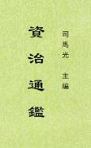

|
資治通鑒監，簡稱通鑒，編年體通史。本書以時間為綱，事件為目，記載從周威烈王二十三年（西元前403年）起，至五代顯德六年（959）征淮南止，涵蓋16朝1362年的歷史。編者總結出許多經驗教訓，以供借鑒，宋神宗認為此書“鑒於往事，有資於治道”，定名為《資治通鑒》。 北宋司馬光主編，歷時19年完成。協修者有劉恕、劉攽、范祖禹三人。劉恕博聞強記，自《史記》以下諸史，旁及私記雜說，無所不覽，對《通鑒》的討論編次，用力最多。劉攽于漢史、范祖禹于唐史，都有專深的研究。他們分工合作，最後由司馬光修改潤色、增加評論，寫成定稿。元豐八年，范祖禹、司馬康、黃庭堅、張舜民等奉命重行校定，元祐元年（1086）校定完畢，送往杭州雕版，元祐七年刊印行世。 繁体本，偏僻字待校。简体本另见。 （2023-1-12，独孤氏整理，A） |
 |